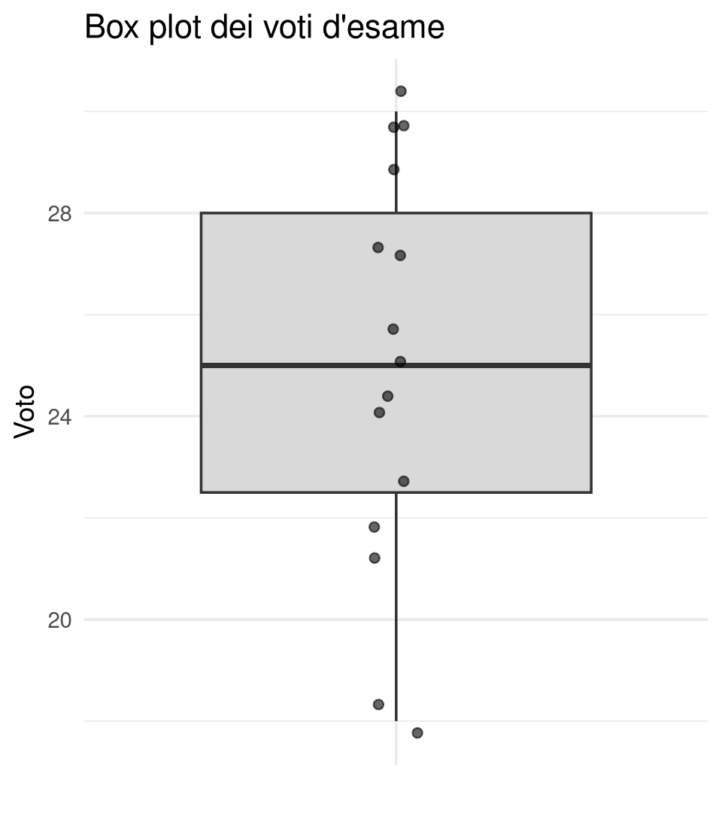
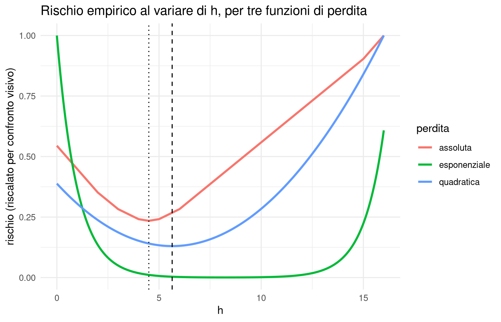
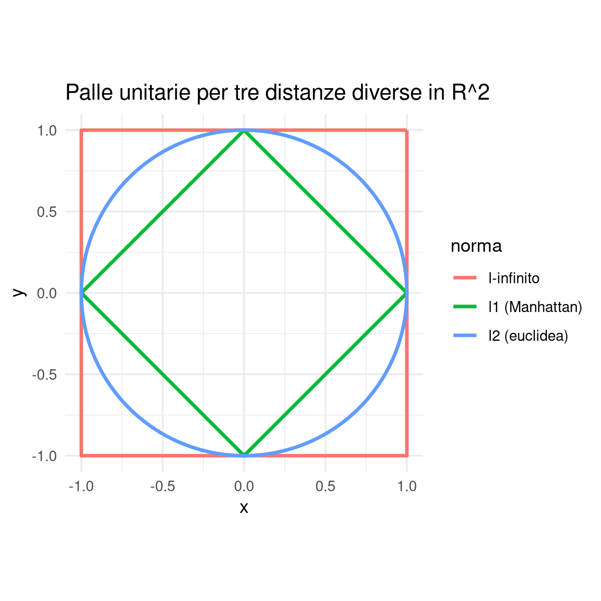

library(ggplot2)1 Dalla statistica descrittiva al rischio empirico
1.1 Obiettivi del capitolo
Al termine di questo capitolo dovresti essere in grado di:
- spiegare perché moda, mediana e media possono essere viste come i minimizzatori di funzioni di perdita diverse, e non come tre ricette scollegate tra loro;
- prevedere qualitativamente come cambia un indicatore di centralità o di variabilità in presenza di un’osservazione anomala, sulla base della forma della perdita associata;
- costruire la perdita assimmetrica opportuna per ottenere un quantile arbitrario, e collegarla ai concetti di quartile e box plot;
- riconoscere il paradigma della minimizzazione del rischio empirico (ERM) come schema unificante, discutendone anche i limiti;
- organizzare correttamente un campione multivariato in un data frame, distinguendo il ruolo di individui e variabili;
- calcolare e confrontare le distanze euclidea, di Manhattan, \(\ell^p\) e del massimo tra osservazioni multivariate, e interpretarne la diversa geometria.
Questo capitolo apre il corso riprendendo concetti che probabilmente hai già incontrato in Statistica I — moda, mediana, media, quantili, varianza — ma li presenta sotto una luce diversa: ogni indicatore statistico è il risultato della minimizzazione di una funzione di perdita. Questa idea, che a lezione viene chiamata paradigma della minimizzazione del rischio empirico (ERM, dall’inglese empirical risk minimization), è il filo conduttore dell’intero corso: la ritroveremo nel clustering, nella classificazione, nella regressione e persino nelle serie storiche. Il capitolo si chiude introducendo i dati multivariati e le distanze tra osservazioni in \(\mathbb{R}^d\), che sono il prerequisito diretto del prossimo capitolo sul clustering.
1.2 Indicatori di centralità: moda, mediana e media
1.2.1 Motivazione
Immagina di dover riassumere con un solo numero un insieme di osservazioni: le altezze di una classe, i voti di un esame, il numero di scarpe delle persone in un’aula. Nessun singolo numero può contenere tutta l’informazione del campione, ma alcuni numeri sono più rappresentativi di altri. Gli indicatori di centralità rispondono proprio a questa esigenza: qual è il valore “tipico” attorno a cui si concentrano le osservazioni?
Il punto di partenza è sempre lo stesso: un campione statistico \(\{x_i\}_{i=1}^n\), cioè un insieme di \(n\) osservazioni raccolte su altrettanti individui estratti da una popolazione. È utile pensare alla popolazione come a un lago da cui peschiamo \(n\) pesci: ogni pesce (individuo) porta con sé un’informazione (l’osservazione \(x_i\)), e il numero \(n\) è la taglia del campione.
1.2.2 Concetto: moda, mediana, media
ImportantDefinizione
Dato un campione \(\{x_i\}_{i=1}^n\):
- la moda è il valore (o i valori) osservato con la frequenza assoluta maggiore;
- la mediana è, una volta ordinato il campione in \(x_{(1)} \le x_{(2)} \le \dots \le x_{(n)}\), il valore centrale: \(x_{((n+1)/2)}\) se \(n\) è dispari, la media dei due valori centrali \(\tfrac{1}{2}\big(x_{(n/2)} + x_{(n/2+1)}\big)\) se \(n\) è pari;
- la media campionaria è \(\bar x = \dfrac{1}{n}\displaystyle\sum_{i=1}^n x_i\).
1.2.3 Intuizione
Questi tre indicatori richiedono ipotesi via via più forti sui dati. La moda si applica a qualunque tipo di osservazione, anche puramente qualitativa: basta poter contare quante volte compare ciascun valore. La mediana richiede qualcosa in più, cioè una relazione d’ordine — non servono necessariamente numeri, ma bisogna poter dire che un’osservazione “precede” un’altra. La media richiede invece che le osservazioni siano numeri veri e propri, perché dobbiamo poterli sommare.
Un esempio concreto per la moda: se osserviamo il colore degli occhi di un gruppo di persone (grigio, verde, azzurro, marrone, nero), contiamo la frequenza assoluta di ciascun colore, e la moda è il colore più frequente. È importante notare fin da subito che la moda può non essere unica: se due colori compaiono esattamente con la stessa frequenza massima, entrambi sono mode. Lo stesso vale, come vedremo, ogni volta che minimizziamo una perdita che ammette più minimizzanti.
Per la mediana, la procedura di ordinamento è concettualmente semplice ma nasconde una piccola arbitrarietà quando \(n\) è pari: non esiste un singolo valore centrale, e la scelta di prendere la media dei due valori di mezzo è una convenzione tra le tante possibili, non un fatto matematico obbligato. Vedremo più avanti che il punto di vista variazionale chiarisce bene perché, in quel caso, qualunque valore tra i due centrali sarebbe ugualmente accettabile.
Per la media, vale la pena osservare fin da subito la notazione: si scrive \(\bar x\) (barra sopra la \(x\)), evitando volutamente un pedice \(n\) che potrebbe far pensare a “una funzione applicata a \(n\)” — la taglia del campione resta un parametro fissato, non una variabile della formula.
1.2.4 Esempio
Uno stesso campione può avere moda, mediana e media molto diverse tra loro. Consideriamo il numero di scarpe rilevato in un’aula: la media potrebbe risultare \(40\), ma se nell’aula ci sono due sottopopolazioni ben distinte (per esempio con taglie tipiche diverse), può darsi che nessuno nell’aula calzi esattamente il numero \(40\). La media, in questo caso, è un valore matematicamente corretto ma che non descrive bene nessun individuo reale: è un primo indizio che un solo indicatore di centralità non basta, e che serve anche capire quanto i dati siano dispersi attorno ad esso.
1.2.5 Interpretazione
Moda, mediana e media rispondono tutte alla domanda “qual è il valore tipico?”, ma lo fanno con criteri diversi: la moda privilegia la frequenza, la mediana la posizione nell’ordinamento, la media il bilanciamento aritmetico degli scarti. Non esiste un indicatore “giusto” in assoluto: la scelta dipende dal tipo di dati e da cosa vogliamo mettere in evidenza. Più avanti in questo capitolo vedremo che questa scelta è in realtà equivalente alla scelta di una funzione di perdita — un modo molto più generale di ragionare sulla stessa domanda.
WarningAttenzione
Non aspettarti che moda, mediana e media coincidano, nemmeno approssimativamente. Su dati fortemente asimmetrici o multimodali possono essere anche molto distanti tra loro, e ciascuna racconta un pezzo diverso della storia. Confrontarle è già di per sé un’analisi utile, prima ancora di scegliere quale usare.
1.2.6 Domande di comprensione
- Un dataset di redditi ha media molto più alta della mediana. Che cosa puoi dedurre, qualitativamente, sulla forma della distribuzione dei redditi?
- Perché la moda è l’unico dei tre indicatori applicabile a dati puramente qualitativi (per esempio colori o categorie senza un ordine naturale)?
- Costruisci mentalmente un piccolo campione di 5 numeri in cui moda, mediana e media siano tutte e tre diverse tra loro. È sempre possibile farlo?
1.3 Indicatori di variabilità: quantili e varianza
1.3.1 Motivazione
Sapere che il numero medio di scarpe in un’aula è 40 non ci dice se tutti calzano più o meno lo stesso numero, oppure se ci sono due gruppi molto distanti dalla media. Abbiamo bisogno di indicatori che misurino quanto le osservazioni si allontanano tipicamente dal valore centrale: gli indicatori di variabilità o dispersione.
1.3.2 Concetto: quantili
Fissato un livello \(\alpha \in (0,1)\), il quantile campionario di livello \(\alpha\) è (approssimativamente, ignorando i dettagli di arrotondamento quando il taglio non cade esattamente su un’osservazione) il valore che lascia una frazione \(\alpha\) del campione ordinato alla sua sinistra e una frazione \(1-\alpha\) alla sua destra. I casi \(\alpha = 1/4, 1/2, 3/4\) sono chiamati rispettivamente primo quartile \(Q_1\), mediana (che quindi è anche il quantile di livello \(1/2\)) e terzo quartile \(Q_3\).
NoteCome leggere il risultato
I quantili sono il linguaggio naturale del box plot (diagramma a scatola): la scatola va da \(Q_1\) a \(Q_3\) e contiene circa metà del campione, la linea al suo interno è la mediana, e i punti isolati oltre i baffi sono i candidati outlier. Un box plot molto asimmetrico, o con molti punti isolati da un solo lato, segnala che la distribuzione dei dati non è simmetrica attorno alla mediana.
1.3.3 Concetto: varianza e deviazione standard
ImportantDefinizione
La varianza campionaria di \(\{x_i\}_{i=1}^n\) è \[ s^2 = \frac{1}{n-1}\sum_{i=1}^n (x_i - \bar x)^2, \] e la deviazione standard è \(s = \sqrt{s^2}\).
1.3.4 Intuizione
La varianza si costruisce in tre passi: si calcola lo scarto di ogni osservazione dalla media (\(x_i - \bar x\)), che può essere positivo o negativo; si eleva al quadrato per renderlo sempre non negativo (ed eliminare la cancellazione tra scarti positivi e negativi); si somma su tutte le osservazioni. Il fattore \(\tfrac{1}{n-1}\) (anziché \(\tfrac{1}{n}\)) è una convenzione che diventa importante solo per campioni piccoli — per \(n\) grande la differenza tra dividere per \(n\) o per \(n-1\) è trascurabile.
Vale la pena osservare fin da ora — lo riprenderemo tra poco in modo rigoroso — che elevare al quadrato ha un prezzo: uno scarto doppio pesa quattro volte tanto, non due. Questo rende la varianza (e quindi anche la media, che ne è l’ingrediente) particolarmente sensibile a osservazioni estreme.
1.3.5 Esempio
Consideriamo i voti di un esame universitario: \(\{24, 26, 27, 24, 28, 30, 18, 27, 29, 26\}\). La deviazione standard di questo campione ci dice, approssimativamente, di quanto un voto tipico si discosta dalla media della classe. Se aggiungessimo un solo voto molto basso, per esempio un \(6\) dovuto a un ritiro parziale, la varianza aumenterebbe molto più di quanto aumenterebbe, per esempio, la distanza interquartile \(Q_3-Q_1\).
1.3.6 Interpretazione
Quantili e varianza rispondono entrambi alla domanda “quanto sono dispersi i dati?”, ma con una differenza cruciale di robustezza.
WarningAttenzione
La varianza è poco robusta: basta un piccolo numero di osservazioni molto lontane dalla media per farla crescere drasticamente, proprio a causa del quadrato. I quantili (e in particolare la distanza interquartile) sono invece molto più robusti agli outlier, perché dipendono solo dalla posizione delle osservazioni nell’ordinamento, non dal loro valore numerico esatto. Ritroveremo questa stessa tensione tra “quadrato” e “valore assoluto/ordine” in tutta la prima parte del corso.
1.3.7 Domande di comprensione
- Due campioni hanno la stessa mediana e lo stesso \(Q_1,Q_3\), ma uno dei due contiene un valore estremamente grande al di fuori dei baffi del box plot. Come cambia (qualitativamente) la varianza dei due campioni?
- Perché ha senso accompagnare sempre la mediana con i quartili, piuttosto che con la sola media?
- Se scalassimo tutte le osservazioni di un fattore 10 (per esempio passando da metri a decimetri), come cambierebbero la deviazione standard e la distanza interquartile? Cambierebbe il loro rapporto?
1.4 Dal rischio quadratico al rischio empirico
1.4.1 Motivazione
Fin qui abbiamo trattato moda, mediana, media e varianza come definizioni indipendenti, ciascuna giustificata da un’intuizione diversa. C’è però un punto di vista molto più profondo, che li unifica tutti: nessuno di questi indicatori è arbitrario. Ciascuno è il valore che minimizza una specifica misura complessiva di “errore” o “costo” nel riassumere il campione con un unico numero. Questo cambio di prospettiva — dal contare e ordinare al minimizzare — è il contributo concettuale più importante di questa lezione, ed è alla base di gran parte della statistica e del machine learning moderni.
1.4.2 Concetto: il rischio quadratico e la media come minimizzante
Supponiamo di voler riassumere il campione \(\{x_i\}_{i=1}^n\) con un singolo valore \(h \in \mathbb{R}\) (una “ipotesi”, o candidato indicatore di centralità). Una misura naturale di quanto \(h\) rappresenti bene i dati è il rischio quadratico (o mean squared error, MSE): \[ R(h) = \sum_{i=1}^n (x_i - h)^2. \]
ImportantDefinizione
La media campionaria è il minimizzatore del rischio quadratico: \[ \bar x_n \in \arg\min_{h \in \mathbb{R}} \sum_{i=1}^n (x_i - h)^2. \]
1.4.3 Intuizione
Perché è vero? Il ragionamento (informale, ma istruttivo) è il seguente: \(R(h)\) è una funzione di \(h\) che tende a \(+\infty\) sia per \(h \to -\infty\) sia per \(h \to +\infty\), quindi ha un minimo da qualche parte. Per trovarlo deriviamo rispetto a \(h\) e imponiamo che la derivata si annulli: \[ \frac{d}{dh} \sum_{i=1}^n (x_i-h)^2 = -2\sum_{i=1}^n (x_i - h) = 0 \quad \Longleftrightarrow \quad \sum_{i=1}^n x_i = n h \quad \Longleftrightarrow \quad h = \frac{1}{n}\sum_{i=1}^n x_i = \bar x. \]
Questa derivazione mostra qualcosa di più della sola formula: chiarisce perché la media è “il” valore che bilancia gli scarti quadratici. Nota anche un dettaglio tecnico ma concettualmente importante: se nella definizione di varianza usassimo il fattore \(\tfrac{1}{n-1}\) invece di \(1\), il minimizzatore \(h^\star\) non cambierebbe affatto — moltiplicare il rischio per una costante positiva non sposta il punto di minimo. La media, insomma, non è “quella cosa che si ottiene sommando e dividendo per \(n\)” per abitudine: è il punto che minimizza la distanza quadratica complessiva dalle osservazioni, e questa caratterizzazione aiuta anche a capire perché la media sia così sensibile ai valori estremi — uno scarto molto grande, elevato al quadrato, domina completamente la somma.
1.4.4 Concetto: la minimizzazione del rischio empirico (ERM)
Una volta capito che la media nasce da una scelta specifica di “funzione di errore”, la generalizzazione è immediata: perché fermarsi al quadrato?
ImportantDefinizione
Data una funzione di perdita (o costo, o errore) \(\ell(x;h)\), che misura quanto “costa” usare \(h\) al posto dell’osservazione \(x\), la minimizzazione del rischio empirico (empirical risk minimization, ERM) consiste nel trovare \[ h^\star \in \arg\min_{h \in \mathbb{R}} \sum_{i=1}^n \ell(x_i; h). \]
1.4.5 Interpretazione
Questo è il paradigma centrale dell’intero corso, non solo di questa lezione: quasi ogni indicatore o modello statistico che incontreremo — dai centroidi del clustering ai coefficienti della regressione lineare — sarà definito come il minimizzatore di un rischio empirico costruito a partire da una funzione di perdita opportuna. Cambiando la perdita \(\ell\), cambia l’indicatore che emerge come minimizzante: è esattamente questo che esploriamo nella prossima sezione.
TipApprofondimento
Se apri un testo di machine learning, troverai spesso un’affermazione forte: “la statistica è solo questo — trovare \(h\) che minimizza una loss, il resto è dettaglio computazionale”. C’è del vero in questa affermazione (il paradigma ERM è oggi centrale: quasi nessuno, in pratica, costruisce più “indicatori esotici” scollegati da un principio di minimizzazione), ma è anche una semplificazione eccessiva. Un corso di statistica come questo si occupa anche di quantificare l’incertezza attorno a un minimizzatore stimato su un campione finito — una domanda che il solo paradigma ERM, da solo, non pone. Ci torneremo esplicitamente quando parleremo di intervalli di confidenza nella regressione.
1.4.6 Domande di comprensione
- Perché moltiplicare il rischio \(R(h)\) per una costante positiva (per esempio dividerlo per \(n\) o per \(n-1\)) non cambia il minimizzatore \(h^\star\)?
- In che senso la definizione di ERM data qui è “più generale” della definizione originaria di media?
- Se scegliamo \(\ell(x;h) = (x-h)^2\) ma sostituiamo la somma su \(i\) con la somma pesata \(\sum_i w_i (x_i-h)^2\) per pesi \(w_i > 0\) fissati, ti aspetti ancora che il minimizzatore sia la media aritmetica semplice? Perché sì o perché no?
1.5 Una famiglia di funzioni di perdita: mediana, quantili, moda ed esponenziale
1.5.1 Motivazione
Il paradigma ERM diventa davvero potente quando lo applichiamo a funzioni di perdita diverse dal quadrato. Vedremo che perdite apparentemente semplici da scrivere generano indicatori che già conosciamo — mediana, quantili, moda — mostrando che non sono ricette isolate ma casi particolari di un unico schema.
1.5.2 Concetto: l’errore assoluto e la mediana
Sostituiamo il quadrato con il valore assoluto: \(\ell(x;h) = |x-h|\), ottenendo il rischio assoluto \(R_1(h) = \sum_i |x_i - h|\).
1.5.3 Intuizione
A differenza del rischio quadratico, \(R_1\) non è derivabile nei punti \(h = x_i\), ma è derivabile altrove, e possiamo comunque ragionare sul segno della derivata. Per \(h\) in un tratto senza osservazioni, la derivata di \(|x_i - h|\) rispetto a \(h\) vale \(+1\) se \(h > x_i\) (l’osservazione è a sinistra) e \(-1\) se \(h < x_i\) (l’osservazione è a destra). Il minimizzatore, quindi, è il punto in cui il numero di derivate \(+1\) e il numero di derivate \(-1\) si bilanciano — cioè il punto in cui ci sono tante osservazioni a sinistra quante a destra. Questa è, per l’appunto, la definizione di mediana.
ImportantDefinizione
La mediana campionaria è (uno dei) minimizzatori del rischio assoluto: \[ \text{med}(x) \in \arg\min_{h \in \mathbb{R}} \sum_{i=1}^n |x_i - h|. \]
Quando \(n\) è pari, questo ragionamento chiarisce anche perché qualunque valore compreso tra le due osservazioni centrali minimizza \(R_1\) allo stesso modo: la convenzione di prendere la loro media, incontrata in precedenza, è solo una scelta tra infinite scelte ugualmente ottimali.
TipApprofondimento
Un po’ di storia. Il criterio degli scarti assoluti minimi fu proposto storicamente da Laplace, prima che Gauss e Legendre popolarizzassero il criterio dei minimi quadrati (in gran parte per la sua trattabilità analitica, dovuta alla derivabilità del quadrato). La contrapposizione tra i due criteri — comodità del calcolo contro robustezza — è ancora oggi al centro della statistica computazionale, e la ritroveremo pari pari quando confronteremo la regressione ai minimi quadrati con le sue varianti robuste.
1.5.4 Concetto: l’errore assoluto asimmetrico e i quantili
Possiamo generalizzare ulteriormente pesando in modo diverso gli scarti a sinistra e a destra di \(h\). Introduciamo la notazione, per \(z \in \mathbb{R}\), \[ z^+ = \max(z,0), \qquad z^- = \max(-z,0), \] (così che \(z = z^+ - z^-\) e \(|z| = z^+ + z^-\)), e definiamo, per un parametro \(p>0\), la perdita assoluta asimmetrica \[ \ell_p(x;h) = p\,(x-h)^- + (x-h)^+. \]
1.5.5 Intuizione
Quando \(p=1\) ritroviamo esattamente il valore assoluto simmetrico, e quindi la mediana. Per \(p \neq 1\), invece, pesiamo di più uno dei due lati: aumentare \(p\) dà più peso alla parte negativa \((x-h)^-\) (cioè ai casi in cui \(h\) è “troppo grande” rispetto a \(x\)), il che spinge il minimizzatore verso sinistra, cioè verso un quantile più basso. Con la scelta \(p=3\) si ottiene esattamente il primo quartile \(Q_1\); scambiando i pesi, cioè penalizzando maggiormente la parte positiva, con \(\ell(x;h) = (x-h)^- + 3(x-h)^+\) si ottiene il terzo quartile \(Q_3\). In generale, tutti i quantili nascono dallo stesso paradigma ERM, semplicemente scegliendo opportunamente il rapporto tra i due pesi.
TipApprofondimento
Questa famiglia di perdite è nota in letteratura come pinball loss (o quantile loss), ed è alla base della regressione quantilica: anziché stimare la media condizionata di una variabile risposta (come fa la regressione ai minimi quadrati), si può stimare un quantile condizionato arbitrario, semplicemente cambiando la funzione di perdita usata nella minimizzazione. È un primo assaggio di quanto sia flessibile il paradigma ERM.
1.5.6 Concetto: l’errore 0-1 e la moda
Per dati categoriali (o comunque privi di una nozione naturale di “quanto” un errore sia grande), ha senso una perdita ancora più elementare, la perdita 0-1: \[ \ell(x;h) = \mathbb{1}[h \neq x] = \begin{cases} 0 & \text{se } h = x \\ 1 & \text{se } h \neq x. \end{cases} \]
1.5.7 Esempio
Immagina un campione di 120 persone di cui 50 hanno gli occhi neri e 70 gli occhi blu (e nessun altro colore). Se scegliamo \(h = \text{nero}\), il rischio empirico vale \(70\) (paghiamo \(1\) per ciascuna delle 70 persone con occhi blu). Se scegliamo \(h=\text{blu}\), il rischio vale \(50\). Il minimo tra i due è \(50\), ottenuto scegliendo il colore più frequente: la moda.
ImportantDefinizione
La moda campionaria è (una dei) minimizzatori del rischio 0-1: \[ \text{moda}(x) \in \arg\min_{h} \sum_{i=1}^n \mathbb{1}[h \neq x_i]. \]
1.5.8 Interpretazione
La perdita 0-1 è la più “cieca” delle perdite viste finora: non distingue tra un errore piccolo e un errore enorme, paga sempre esattamente \(1\) se sbagliamo. Per questo è adatta a variabili categoriali prive di una struttura di distanza naturale (come il colore degli occhi), ma diventa un limite serio quando i dati hanno una struttura numerica: sbagliare di poco costa quanto sbagliare di molto. Ritroveremo esattamente questa perdita — con lo stesso nome — quando parleremo di errore di classificazione nei capitoli sulla classificazione.
1.5.9 Concetto: la perdita esponenziale e un cenno alla perdita di Huber
Consideriamo infine \(\ell(x;h) = \exp(|x-h|)\).
1.5.10 Intuizione
Se \(h\) è vicino a \(x\), la perdita è vicina a \(\exp(0)=1\); ma se lo scarto \(|x-h|\) cresce anche di poco, la perdita esplode, perché la funzione esponenziale cresce molto più rapidamente di una potenza qualsiasi. Il risultato è una perdita estremamente sensibile agli outlier: pochi punti (anche uno solo) molto lontani dalla massa principale dei dati possono spostare drasticamente il minimizzatore.
Un caso limite istruttivo: se abbiamo solo tre osservazioni, di cui due vicine tra loro e una molto lontana, il minimizzatore della perdita esponenziale non si posiziona sulla mediana (come farebbe l’errore assoluto), ma si colloca circa a metà strada tra il valore minimo e il valore massimo del campione — perché il singolo punto lontano, elevato all’esponenziale, “costa” così tanto da dominare completamente la somma, tirando \(h\) verso di sé molto più di quanto farebbe una perdita quadratica o assoluta.
TipApprofondimento
Un compromesso tra il comportamento quadratico (vicino a \(h\)) e quello lineare/assoluto (lontano da \(h\)) è offerto dalla perdita di Huber, che unisce le due: \[ \ell_\delta(x;h) = \begin{cases} \tfrac12 (x-h)^2 & \text{se } |x-h| \le \delta \\[4pt] \delta\left(|x-h| - \tfrac12\delta\right) & \text{se } |x-h| > \delta, \end{cases} \] per una soglia \(\delta>0\) fissata. Vicino al minimo si comporta come il rischio quadratico (comodo da un punto di vista analitico), ma lontano dal minimo cresce solo linearmente, come l’errore assoluto, evitando l’esplosione tipica del quadrato o dell’esponenziale in presenza di outlier. È un esempio di come si possa disegnare su misura una funzione di perdita, combinando le proprietà di più perdite elementari.
TipApprofondimento
Il corso mette a disposizione una demo interattiva (WERMS, disponibile online) in cui puoi scegliere un piccolo campione, provare a indovinare a occhio il minimizzatore per diverse perdite (quadratica, assoluta, asimmetrica, esponenziale, di Huber) e confrontare il tuo intuito con il risultato esatto. Nel laboratorio R di questo capitolo ne ricostruiamo una versione semplificata.
1.5.11 Interpretazione d’insieme
La tabella seguente riassume la corrispondenza tra perdita e indicatore che emerge dal paradigma ERM.
| Funzione di perdita \(\ell(x;h)\) | Minimizzatore |
|---|---|
| \((x-h)^2\) | media \(\bar x\) |
| \(\lvert x-h\rvert\) | mediana |
| \(p\,(x-h)^- + (x-h)^+\) | quantile di livello legato a \(p\) |
| \(\mathbb{1}[h\neq x]\) | moda |
| \(\exp(\lvert x-h\rvert)\) | punto sensibile agli outlier (in casi estremi, punto medio tra min e max) |
Il messaggio pedagogico è che non stiamo imparando indicatori scollegati, ma stiamo osservando lo stesso principio — minimizzare un rischio empirico — applicato a scelte diverse di perdita. Una volta interiorizzato questo schema, diventa naturale chiedersi: quale perdita è più adatta al mio problema? È una domanda che guiderà buona parte del resto del corso.
WarningAttenzione
Il paradigma ERM è potentissimo, ma non esaurisce la statistica. Sapere che \(h^\star\) minimizza un certo rischio empirico sul campione osservato non ci dice nulla, di per sé, su quanto ci possiamo fidare di \(h^\star\) come stima di una quantità della popolazione, né su come cambierebbe \(h^\star\) ripetendo l’esperimento con un campione diverso. Questa domanda sull’incertezza — tipica della statistica inferenziale più che del solo machine learning — tornerà esplicitamente più avanti nel corso.
1.5.12 Domande di comprensione
- Perché la perdita 0-1 è adatta a colori degli occhi ma sarebbe una scelta discutibile per riassumere un campione di voti d’esame (numeri da 0 a 30)?
- Costruisci un esempio (anche solo a parole) in cui il minimizzatore della perdita esponenziale è visibilmente diverso sia dalla media sia dalla mediana. Che tipo di campione serve per ottenere questo effetto?
- Se in \(\ell_p(x;h) = p\,(x-h)^- + (x-h)^+\) aumentiamo \(p\) da \(1\) a un valore molto grande, verso quale estremo del campione ti aspetti che si sposti il minimizzatore? Perché?
- La perdita di Huber “diventa” quadratica per \(|x-h|\le\delta\) e assoluta per \(|x-h|>\delta\). Che cosa succede al comportamento della perdita se facciamo tendere \(\delta \to 0\)? E se \(\delta \to \infty\)?
1.6 Dati multivariati: dal singolo carattere al vettore di caratteristiche
1.6.1 Motivazione
Fin qui abbiamo sempre lavorato con osservazioni univariate: un solo numero (o categoria) per individuo. Ma nella pratica raramente osserviamo una sola caratteristica: per ogni persona potremmo misurare altezza, peso, numero di scarpe, colore degli occhi, e così via. Serve quindi passare dalla statistica univariata alla statistica multivariata.
1.6.2 Concetto: notazione e organizzazione dei dati
Un campione di \(n\) individui, ciascuno descritto da \(d\) caratteristiche (o feature), si indica con \(x_{i,j}\), dove \(i=1,\dots,n\) indicizza gli individui e \(j=1,\dots,d\) le caratteristiche. Ogni individuo \(i\) porta con sé un vettore \(x_i = (x_{i,1},\dots,x_{i,d}) \in \mathbb{R}^d\) (o, più in generale, uno spazio con componenti anche non numeriche).
La convenzione tabellare standard è: individui sulle righe, variabili sulle colonne. Il risultato è una tabella \(n \times d\).
1.6.3 Intuizione
Numericamente, questa tabella è una matrice. Ma in R (e nella pratica statistica) la chiamiamo data frame, non matrice, e la distinzione non è pedante: una matrice, in senso stretto, contiene elementi tutti dello stesso tipo, mentre le colonne di un data frame possono avere tipi diversi (una colonna numerica per l’altezza, una colonna categoriale per il colore degli occhi, e così via). Il data frame è quindi il contenitore giusto per rappresentare dati eterogenei mantenendo comunque, quando serve, la possibilità di trattare le colonne numeriche come una vera matrice.
1.6.4 Esempio
Un piccolo data frame di 4 studenti con due caratteristiche numeriche (voto di matematica, voto di fisica):
| studente | matematica | fisica |
|---|---|---|
| 1 | 28 | 25 |
| 2 | 22 | 27 |
| 3 | 30 | 29 |
| 4 | 19 | 21 |
Ogni riga è un vettore \(x_i \in \mathbb{R}^2\).
1.6.5 Interpretazione
L’assunzione implicita più comune è che il numero di individui \(n\) sia molto più grande del numero di caratteristiche \(d\) (\(n \gg d\)): tante osservazioni, poche variabili per ciascuna.
WarningAttenzione
Questa assunzione non è sempre valida. In ambito biomedico, per esempio, un singolo sequenziamento genetico può produrre decine di migliaia di caratteristiche per individuo, mentre il numero di pazienti disponibili (specie per malattie rare) può essere molto piccolo: il regime tipico è \(d \gg n\). Questo capovolgimento ha conseguenze profonde su quasi tutti i metodi che vedremo nel corso — non è solo un dettaglio di conteggio, ed è uno dei motivi per cui la riduzione della dimensionalità (che vedremo più avanti, discutendo la PCA) è così importante nella statistica moderna.
1.6.6 Domande di comprensione
- Perché un data frame non è semplicemente “una matrice con un altro nome”? Fai un esempio concreto in cui la distinzione conta.
- Nel caso \(d \gg n\), perché ti aspetti che indicatori come la varianza campionaria di ogni singola variabile diventino meno affidabili?
- Se ogni individuo del tuo campione fosse descritto da un’unica caratteristica numerica, la distinzione tra “matrice” e “data frame” avrebbe ancora senso?
1.7 Distanze tra osservazioni multivariate
1.7.1 Motivazione
Con osservazioni univariate, confrontare due valori è semplice: basta la differenza \(x - h\). Con osservazioni multivariate, \(x\) e \(h\) sono vettori in \(\mathbb{R}^d\), e la sottrazione componente per componente lascia ancora un vettore, non un numero. Abbiamo bisogno di un modo per riassumere “quanto sono lontani” due vettori con un singolo numero: una distanza.
1.7.2 Concetto: la distanza euclidea
ImportantDefinizione
Dati \(x,h \in \mathbb{R}^d\), la distanza euclidea è \[ \|x-h\|_2 = \sqrt{\sum_{j=1}^d (x_j - h_j)^2}. \]
1.7.3 Intuizione
È la distanza “in linea d’aria”: la lunghezza del segmento che congiunge i due punti nello spazio, esattamente come il teorema di Pitagora in due o tre dimensioni. Nota bene: nonostante la somiglianza nella formula, questa non è la varianza o la deviazione standard — lì si confrontava ogni singola osservazione con la media dell’intero campione lungo una sola variabile; qui stiamo confrontando due singole osservazioni multivariate, componente per componente, lungo tutte le \(d\) caratteristiche.
1.7.4 Concetto: la distanza di Manhattan
ImportantDefinizione
La distanza di Manhattan (o \(\ell^1\), o “del tassista”) è \[ \|x-h\|_1 = \sum_{j=1}^d |x_j - h_j|. \]
1.7.5 Intuizione
Il nome viene da un’immagine efficace: a Manhattan le strade formano una griglia regolare, e per andare da un incrocio all’altro non si può tagliare in diagonale come farebbe un uccello in volo — bisogna percorrere isolati, prima in una direzione poi nell’altra. La distanza di Manhattan somma gli spostamenti necessari lungo ciascun asse, senza mai “accorciare” per la diagonale. Poiché non eleva al quadrato gli scarti, tende a essere più robusta agli scarti anomali su una singola coordinata rispetto alla distanza euclidea — esattamente come il valore assoluto è più robusto del quadrato nel caso univariato.
1.7.6 Concetto: la distanza \(\ell^p\) e la distanza del massimo
Le due distanze precedenti sono casi particolari di una famiglia più ampia.
ImportantDefinizione
Per \(p \ge 1\), la distanza \(\ell^p\) (o di Minkowski) è \[ \|x-h\|_p = \left(\sum_{j=1}^d |x_j - h_j|^p\right)^{1/p}. \] Il caso limite \(p \to \infty\) dà la distanza del massimo: \[ \|x-h\|_\infty = \max_{j=1,\dots,d} |x_j - h_j|. \]
1.7.7 Intuizione
La distanza \(\ell^p\) interpola tra Manhattan (\(p=1\)) ed euclidea (\(p=2\)), e per \(p\) sempre più grande dà peso via via crescente alla coordinata in cui lo scarto è maggiore, fino a “guardare solo quella” nel limite \(p\to\infty\): la distanza del massimo, infatti, ignora completamente tutte le coordinate tranne quella con lo scarto più grande.
1.7.8 Esempio
NoteCome leggere il risultato
Considera due studenti con voti (matematica, fisica, chimica) pari a \(x=(28,20,25)\) e \(h=(20,20,29)\). Gli scarti componente per componente sono \((8,0,-4)\). La distanza euclidea è \(\sqrt{8^2+0^2+4^2}=\sqrt{80}\approx 8.9\); quella di Manhattan è \(8+0+4=12\); quella del massimo è \(8\). Nota che tutte e tre concordano nel dire che gli studenti non sono identici, ma quantificano la distanza in modo diverso, e in problemi con più variabili l’ordinamento delle coppie di punti dal più vicino al più lontano può cambiare a seconda della distanza scelta.
1.7.9 Interpretazione: la geometria delle distanze
Un modo efficace per visualizzare le differenze tra queste distanze è disegnare, per ciascuna, l’insieme dei punti a distanza (al più) \(1\) dall’origine — la cosiddetta palla unitaria. In dimensione 2, la palla euclidea è un disco circolare; la palla \(\ell^1\) è un quadrato ruotato di 45° (un “rombo”); la palla \(\ell^\infty\) è un quadrato allineato agli assi; le palle \(\ell^p\) intermedie interpolano tra queste forme, diventando via via più “squadrate” al crescere di \(p\).
TipApprofondimento
Questa geometria non è solo un esercizio grafico: la forma della palla unitaria associata a una distanza (o, equivalentemente, a una norma) determina proprietà importanti dei problemi di ottimizzazione costruiti su di essa. Vedremo, quando parleremo di regolarizzazione nella regressione lineare (Ridge e LASSO), che la scelta tra una penalizzazione basata sulla norma \(\ell^2\) o sulla norma \(\ell^1\) ha conseguenze molto concrete — in particolare, la forma “a punta” della palla \(\ell^1\) è responsabile del fatto che LASSO tende a produrre soluzioni con molte coordinate esattamente nulle, mentre Ridge no. Per ora basti notare che stiamo già incontrando, nella sua forma più elementare, la stessa geometria che tornerà utile molto più avanti nel corso.
WarningAttenzione
Tutte queste distanze trattano le \(d\) caratteristiche come se fossero misurate sulla stessa scala. Se una variabile è espressa in metri e un’altra in migliaia di euro, la seconda dominerà quasi sempre la distanza complessiva, indipendentemente dalla scelta di \(p\), semplicemente perché i suoi valori numerici sono più grandi. Questo problema della scala delle variabili è cruciale, e lo ritroveremo — con la stessa soluzione pratica, la standardizzazione — quando parleremo di clustering, di \(K\)-nearest neighbors e di analisi delle componenti principali.
TipApprofondimento
Abbiamo definito le distanze, ma non ancora come riassumere un intero gruppo di osservazioni multivariate con un unico punto rappresentativo — l’analogo multivariato di media o mediana. Questo richiede i concetti di centroide e medoide, che sono il punto di partenza del prossimo capitolo, dedicato al clustering: lì vedremo come le distanze introdotte qui diventino gli ingredienti principali per definire e trovare gruppi di osservazioni simili tra loro.
1.7.10 Domande di comprensione
- Due punti hanno la stessa distanza euclidea da un terzo punto, ma distanze di Manhattan diverse. È una situazione possibile? Prova a costruire un esempio con \(d=2\).
- Perché la distanza \(\ell^\infty\) può essere “ingannevole” se una sola caratteristica, per motivi puramente di scala (per esempio è misurata in millimetri invece che in metri), assume valori numericamente molto più grandi delle altre?
- Disegnando (anche solo mentalmente) le palle unitarie per \(p=1,2,4,\infty\) in \(\mathbb{R}^2\), in che modo cambia la loro forma al crescere di \(p\)? Che cosa “guadagna” e che cosa “perde” la distanza \(\ell^\infty\) rispetto alle altre?
1.8 Cosa ricordare
- Moda, mediana, media, quantili e varianza non sono definizioni scollegate: sono tutte minimizzatori di funzioni di perdita specifiche, applicate allo stesso schema di minimizzazione del rischio empirico (ERM).
- La media minimizza il rischio quadratico \(\sum_i (x_i-h)^2\); la mediana minimizza il rischio assoluto \(\sum_i |x_i-h|\); i quantili minimizzano una versione asimmetrica del rischio assoluto (perdita “pinball”); la moda minimizza il rischio 0-1.
- Il quadrato rende la media (e la varianza) analiticamente comode ma poco robuste agli outlier; il valore assoluto rende mediana e quantili più robusti ma meno “lisci” da un punto di vista analitico; la perdita esponenziale è un caso estremo di sensibilità agli outlier, mentre la perdita di Huber è un compromesso costruito su misura.
- Il paradigma ERM è centrale in tutto il corso, ma non esaurisce la statistica: non dice nulla, di per sé, sull’incertezza di una stima calcolata su un campione finito.
- I dati multivariati si organizzano in un data frame \(n\times d\) (individui per righe, variabili per colonne), distinto concettualmente da una matrice perché le colonne possono avere tipi diversi.
- Il regime abituale \(n \gg d\) non è universale: in ambito biomedico e in altri contesti si incontra spesso il regime opposto \(d \gg n\).
- Le distanze euclidea, di Manhattan, \(\ell^p\) e del massimo generalizzano in modo diverso il concetto di “scarto” al caso multivariato, e la loro geometria (le palle unitarie) prefigura temi che ritorneremo a incontrare nel clustering e nella regolarizzazione.
- La scelta della distanza (così come la scelta della funzione di perdita) non è neutra: dipende dai dati, dalla scala delle variabili e da cosa vogliamo mettere in evidenza.
1.9 Domande di riepilogo
Comprendere
- Spiega, con parole tue, in che senso “la media non è solo una convenzione, ma il minimizzatore di qualcosa”.
- Perché la perdita 0-1 non fa distinzione tra un errore piccolo e un errore grande, e in quali contesti questo è un limite serio?
Ragionare
- Confronta la sensibilità agli outlier di media, mediana e minimizzatore della perdita esponenziale. Ordinale dalla più alla meno sensibile e giustifica l’ordinamento.
- Un collega sostiene che, poiché sia la mediana sia il quantile di livello \(\alpha=0{,}5\) risolvono lo stesso problema di minimizzazione, non è mai necessario introdurre la notazione \(z^+,z^-\). È d’accordo? In quali situazioni quella notazione diventa invece indispensabile?
- Perché la distanza euclidea e la varianza campionaria, pur avendo formule che “sembrano” simili (entrambe coinvolgono somme di quadrati), rispondono a domande statistiche completamente diverse?
Esplorare con R
- Nel laboratorio di questo capitolo confronterai media e mediana su un campione con un valore anomalo. Prima di eseguire il codice, prevedi qualitativamente quale delle due statistiche cambierà di più rimuovendo quel valore.
- Prova a modificare il parametro \(p\) nella perdita asimmetrica \(\ell_p(x;h)=p(x-h)^- + (x-h)^+\) nel codice del laboratorio. Come si sposta il minimizzatore al crescere di \(p\), e perché questo è coerente con l’interpretazione data nel capitolo?
1.10 Laboratorio R: leggere i dati, non programmare
L’obiettivo di questo laboratorio non è scrivere codice complesso, ma usare R per vedere concretamente ciò che abbiamo appena discusso: quanto media e mediana possono differire, come si comportano geometricamente le diverse funzioni di perdita, e come cambiano le distanze tra osservazioni multivariate a seconda della norma scelta.
1.10.1 Robustezza di media e mediana: uno stipendio fuori scala
Immaginiamo gli stipendi mensili netti (in euro) di 20 dipendenti di una piccola azienda, quasi tutti con stipendi simili, tranne uno (il titolare) molto più alto.
NotePrima di calcolare
Sulla base di ciò che abbiamo visto (la media minimizza un rischio quadratico, la mediana un rischio assoluto), cosa ti aspetti: quale delle due statistiche pensi risentirà maggiormente della presenza dello stipendio del titolare? Prova a rispondere prima di guardare l’output.
set.seed(2024)
stipendi <- c(round(rnorm(19, mean = 1600, sd = 120)), 9800)
stipendi [1] 1718 1656 1587 1574 1739 1755 1664 1585 1453 1465 1399 1656 1700 1635 1207
[16] 1582 1488 1655 1407 9800mean(stipendi)[1] 1986.25median(stipendi)[1] 1611# Rimuoviamo temporaneamente lo stipendio del titolare
stipendi_senza_outlier <- stipendi[stipendi < 9800]
mean(stipendi_senza_outlier)[1] 1575median(stipendi_senza_outlier)[1] 1587- Confronta i quattro numeri ottenuti. Di quanto (in valore assoluto e in percentuale) cambia la media togliendo l’osservazione anomala? Di quanto cambia la mediana?
- La tua previsione iniziale era corretta?
- Quale delle due statistiche, mediana o media, useresti per descrivere “lo stipendio tipico” di questa azienda in un articolo di giornale? Motiva la scelta collegandola alla nozione di robustezza.
- Prova a immaginare (senza ricalcolare) cosa succederebbe se, invece di un solo titolare, ci fossero cinque dipendenti con stipendi altrettanto alti. Ti aspetti che la mediana resti robusta anche in quel caso?
1.10.2 Quantili e box plot su un campione di voti
voti <- c(18, 30, 24, 27, 21, 26, 24, 29, 30, 22, 25, 27, 18, 30, 23)
quantile(voti, probs = c(0, 0.25, 0.5, 0.75, 1)) 0% 25% 50% 75% 100%
18.0 22.5 25.0 28.0 30.0 ggplot(data.frame(voto = voti), aes(x = "", y = voto)) +
geom_boxplot(fill = "grey85") +
geom_jitter(width = 0.05, alpha = 0.6) +
labs(x = NULL, y = "Voto", title = "Box plot dei voti d'esame") +
theme_minimal()
- Individua sul grafico la mediana, \(Q_1\) e \(Q_3\): corrispondono ai valori restituiti da
quantile()? - Ci sono punti che il box plot segnalerebbe come possibili outlier? Guardando i dati grezzi, ti sembra una segnalazione ragionevole?
- Cosa cambierebbe nel box plot se aggiungessimo un solo voto pari a 3 (per esempio per un compito consegnato in bianco)?
1.10.3 Ricostruire la logica di WERMS: la geometria di diverse funzioni di perdita
Costruiamo un piccolo campione (analogo a quelli usati nella demo interattiva WERMS vista a lezione) e osserviamo come cambia la forma del rischio empirico — e il suo minimizzatore — al variare della funzione di perdita.
x <- c(2, 3, 4, 4.5, 5, 6, 15) # un campione di 7 punti, con un valore isolato
h_grid <- seq(0, 16, by = 0.02)
rischio_quadratico <- sapply(h_grid, function(h) sum((x - h)^2))
rischio_assoluto <- sapply(h_grid, function(h) sum(abs(x - h)))
rischio_esponenziale <- sapply(h_grid, function(h) sum(exp(abs(x - h))))
risultati <- data.frame(
h = rep(h_grid, 3),
rischio = c(rischio_quadratico, rischio_assoluto, rischio_esponenziale) /
c(rep(max(rischio_quadratico), length(h_grid)),
rep(max(rischio_assoluto), length(h_grid)),
rep(max(rischio_esponenziale), length(h_grid))),
perdita = rep(c("quadratica", "assoluta", "esponenziale"), each = length(h_grid))
)
ggplot(risultati, aes(x = h, y = rischio, color = perdita)) +
geom_line(linewidth = 1) +
geom_vline(xintercept = mean(x), linetype = "dashed") +
geom_vline(xintercept = median(x), linetype = "dotted") +
labs(y = "rischio (riscalato per confronto visivo)",
title = "Rischio empirico al variare di h, per tre funzioni di perdita") +
theme_minimal()
NoteCome leggere il risultato
Le curve sono state riscalate solo per poterle confrontare sullo stesso grafico (le unità di misura del rischio quadratico, assoluto ed esponenziale non sono comparabili tra loro). La linea tratteggiata segna la media, quella punteggiata la mediana: osserva dove si trova il minimo di ciascuna curva rispetto a queste due linee di riferimento.
- Il minimo della curva “quadratica” cade esattamente sulla linea tratteggiata (la media)? E quello della curva “assoluta” sulla linea punteggiata (la mediana)?
- Dove si colloca il minimo della curva “esponenziale” rispetto agli altri due? È più vicino al punto isolato \(15\) o al resto del campione?
- Prova a cambiare il valore \(15\) in qualcosa di più estremo (per esempio \(50\)) e a rieseguire il codice. Come si sposta il minimizzatore della perdita esponenziale? E quello della mediana?
Verifichiamo ora numericamente la perdita asimmetrica per ottenere un quartile, usando lo stesso campione:
p <- 3 # peso maggiore sulla parte negativa: dovremmo avvicinarci a Q1
rischio_asimmetrico <- sapply(h_grid, function(h) {
z <- x - h
z_pos <- pmax(z, 0)
z_neg <- pmax(-z, 0)
sum(p * z_neg + z_pos)
})
h_min_asimmetrico <- h_grid[which.min(rischio_asimmetrico)]
h_min_asimmetrico[1] 3quantile(x, probs = 0.25)25%
3.5 - Il minimizzatore trovato per via numerica è vicino al primo quartile calcolato con
quantile()? Le piccole differenze che eventualmente osservi da cosa possono dipendere (pensa alla grigliah_gride alle diverse convenzioni con cui R calcola i quantili)? - Modifica
pa1/3invece di3. Quale quartile ti aspetti di ottenere adesso? Verifica.
1.10.4 La geometria delle distanze: palle unitarie a confronto
angoli <- seq(0, 2 * pi, length.out = 400)
palla_euclidea <- data.frame(x = cos(angoli), y = sin(angoli), norma = "l2 (euclidea)")
palla_manhattan <- data.frame(x = c(1, 0, -1, 0, 1), y = c(0, 1, 0, -1, 0), norma = "l1 (Manhattan)")
palla_max <- data.frame(x = c(1, 1, -1, -1, 1), y = c(1, -1, -1, 1, 1), norma = "l-infinito")
palle <- rbind(palla_euclidea, palla_manhattan, palla_max)
ggplot(palle, aes(x = x, y = y, color = norma)) +
geom_path(linewidth = 1) +
coord_fixed() +
labs(title = "Palle unitarie per tre distanze diverse in R^2") +
theme_minimal()
- Quale delle tre “palle” contiene le altre due, e quale è contenuta nelle altre due? Che relazione d’ordine osservi tra \(\|\cdot\|_1\), \(\|\cdot\|_2\) e \(\|\cdot\|_\infty\)?
- Il punto \((1,1)\) ha norma euclidea \(\sqrt2 \approx 1{,}41\), norma di Manhattan \(2\) e norma del massimo \(1\). Colloca questo punto rispetto alle tre curve disegnate: conferma quanto trovato nella domanda precedente?
- Aumentando l’esponente \(p\) da \(2\) a valori sempre più grandi, verso quale delle forme già disegnate ti aspetti che la palla \(\ell^p\) si avvicini?
1.10.5 Distanze multivariate su un piccolo dataset
studenti <- data.frame(
matematica = c(28, 20, 30, 19, 24),
fisica = c(25, 27, 29, 21, 24),
row.names = paste0("Studente ", 1:5)
)
studenti matematica fisica
Studente 1 28 25
Studente 2 20 27
Studente 3 30 29
Studente 4 19 21
Studente 5 24 24round(as.matrix(dist(studenti, method = "euclidean")), 1) Studente 1 Studente 2 Studente 3 Studente 4 Studente 5
Studente 1 0.0 8.2 4.5 9.8 4.1
Studente 2 8.2 0.0 10.2 6.1 5.0
Studente 3 4.5 10.2 0.0 13.6 7.8
Studente 4 9.8 6.1 13.6 0.0 5.8
Studente 5 4.1 5.0 7.8 5.8 0.0round(as.matrix(dist(studenti, method = "manhattan")), 1) Studente 1 Studente 2 Studente 3 Studente 4 Studente 5
Studente 1 0 10 6 13 5
Studente 2 10 0 12 7 7
Studente 3 6 12 0 19 11
Studente 4 13 7 19 0 8
Studente 5 5 7 11 8 0round(as.matrix(dist(studenti, method = "maximum")), 1) Studente 1 Studente 2 Studente 3 Studente 4 Studente 5
Studente 1 0 8 4 9 4
Studente 2 8 0 10 6 4
Studente 3 4 10 0 11 6
Studente 4 9 6 11 0 5
Studente 5 4 4 6 5 0- Individua, per ciascuna delle tre matrici di distanza, la coppia di studenti più vicina tra loro. È sempre la stessa coppia indipendentemente dalla distanza scelta, oppure la scelta della distanza cambia la risposta?
- Lo Studente 4 ha voti piuttosto bassi su entrambe le materie. In quale delle tre distanze risulta “più isolato” rispetto agli altri (cioè con le distanze medie più grandi verso il resto del gruppo)?
- Se una delle due materie fosse invece misurata su una scala da 0 a 100 anziché da 0 a 30 (per esempio un punteggio di un test standardizzato), come cambierebbe l’importanza relativa delle due materie in ciascuna delle tre distanze, anche senza rifare il calcolo? Questo problema ti ricorda quello discusso a proposito della scala delle variabili nella sezione precedente — lo ritroveremo in modo cruciale quando parleremo di clustering e di \(K\)-nearest neighbors.